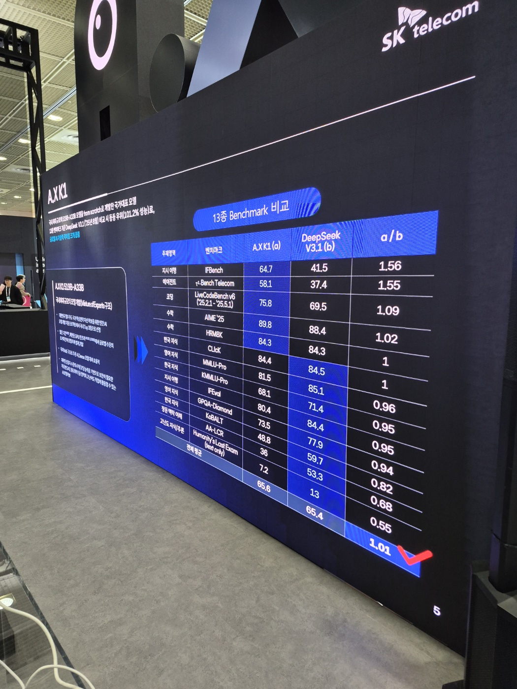
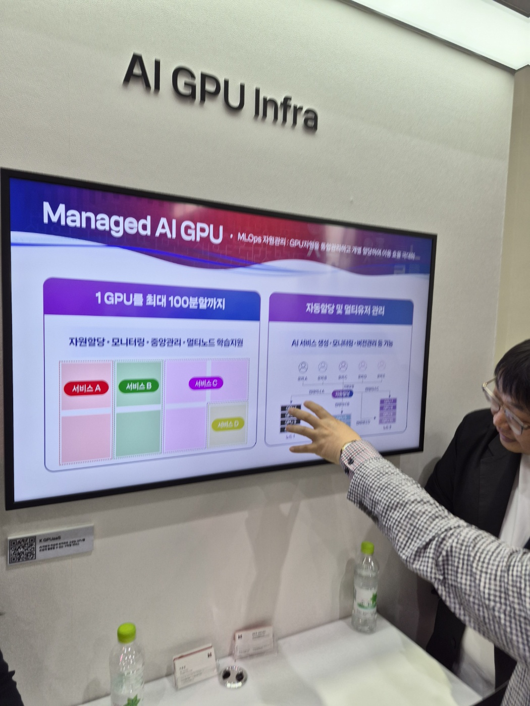
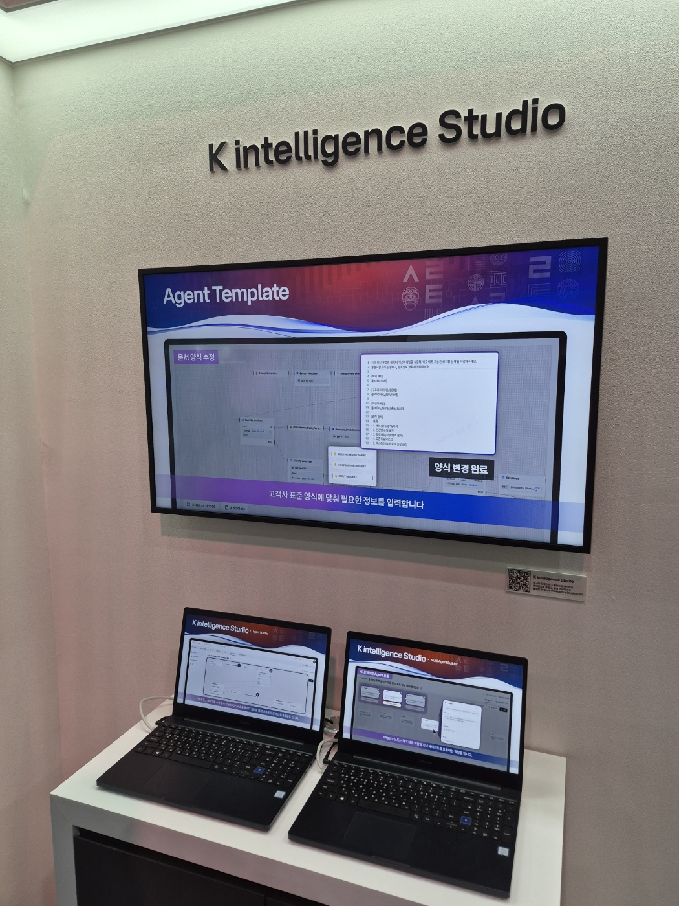
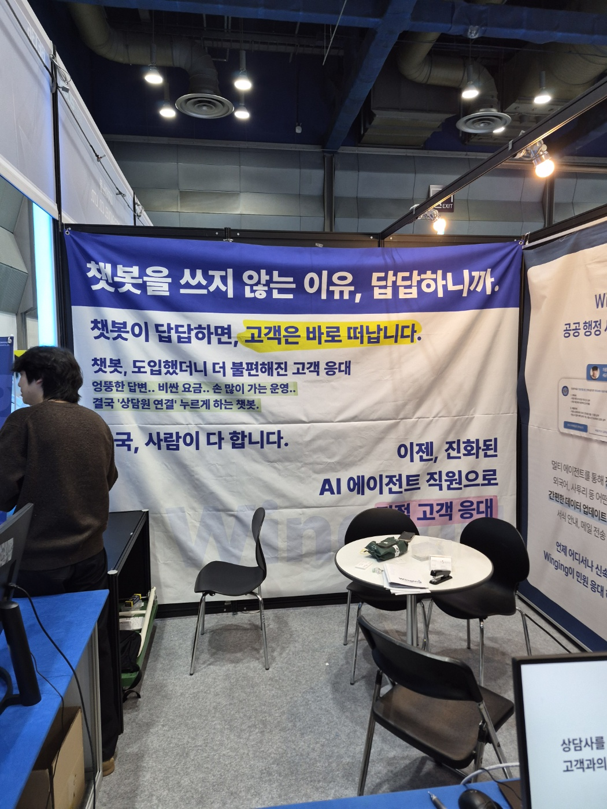
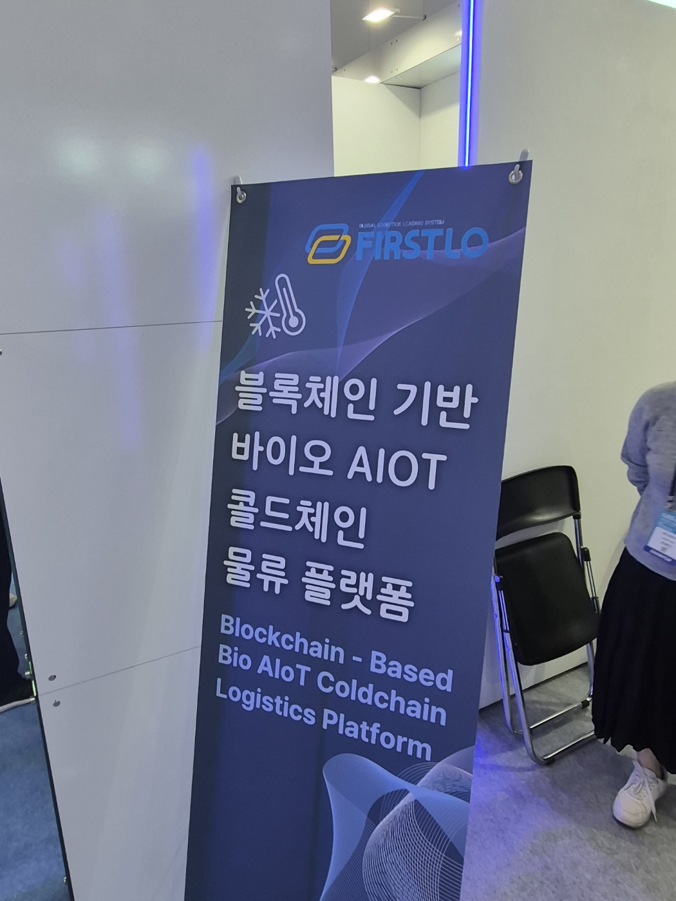
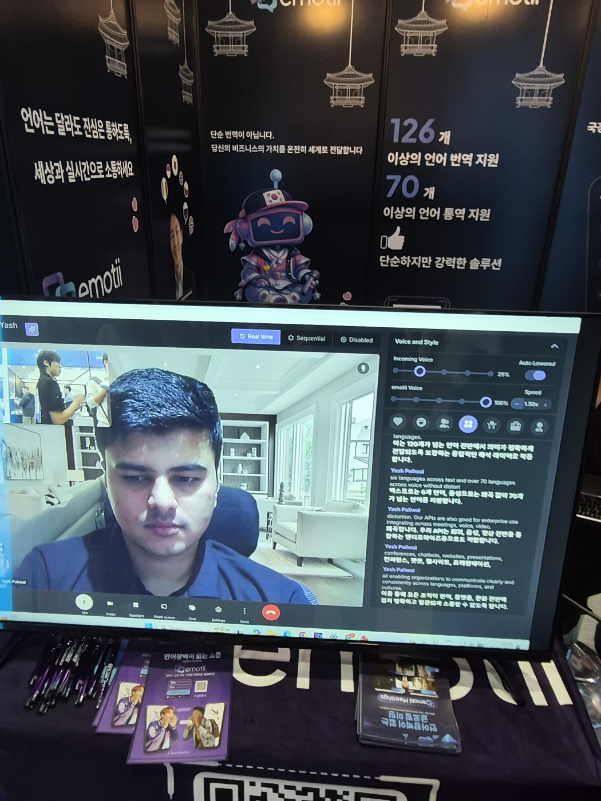
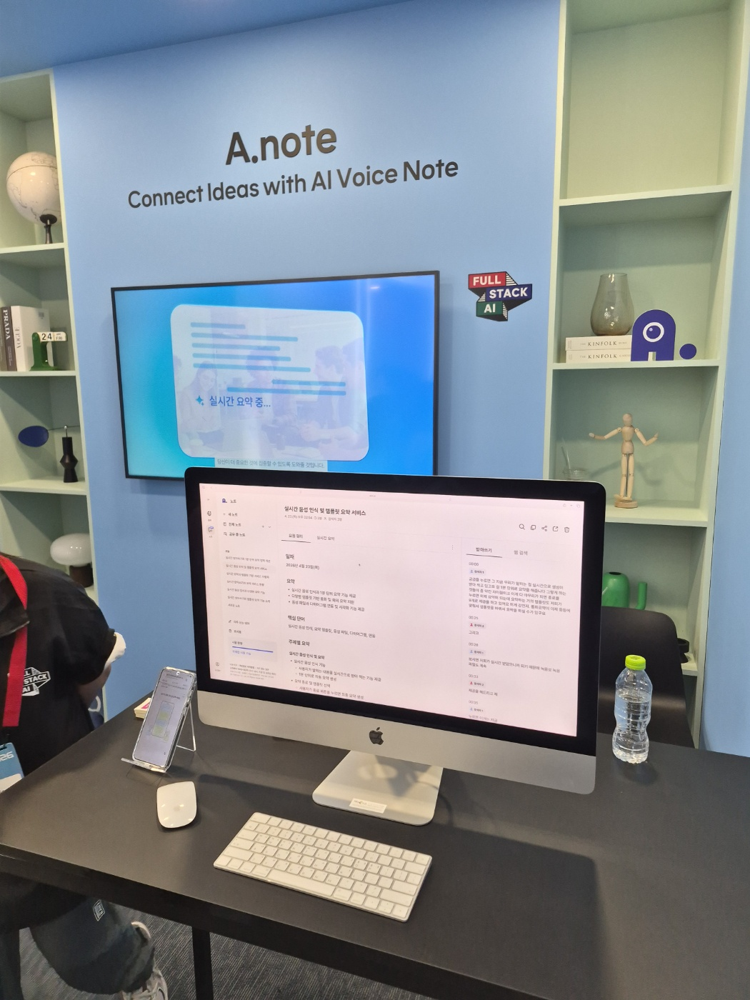
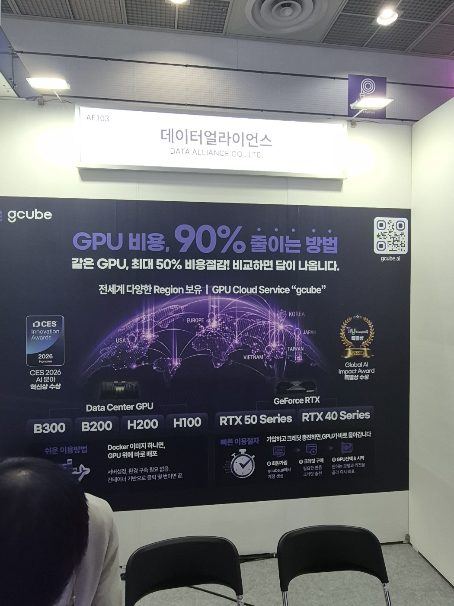

생각을 넘어 행동으로: AI, 현실을 움직이다
월드 IT 쇼(World IT Show, WIS)는 과학기술정보통신부가 주최하고 국내 주요 ICT 협·단체가 공동 주관하는 국내 최대 규모의 정보통신·ICT 융합 전시회입니다. 2008년부터 매년 개최되어 온 본 행사는 국내외 ICT 산업의 최신 동향과 신기술을 한자리에서 확인할 수 있는 대표적 산업 플랫폼으로 자리매김하였습니다.
2026년 행사는 '생각을 넘어 행동으로: AI, 현실을 움직이다'를 슬로건으로, '피지컬 AI(Physical AI) 대전환'을 핵심 키워드로 내세우며 4월 22일(수)부터 24일(금)까지 3일간 서울 코엑스(COEX) 전시장 전관에서 개최되었습니다. 생성형 AI·온디바이스 AI·AI 반도체·DX 솔루션·차세대 통신·로보틱스 등 산업 전반의 핵심 기술이 집중 소개되었습니다.
당사 블록체인팀은 자사 사업 아이디어 탐색 및 신기술·솔루션 벤치마킹을 목적으로 행사 마지막 날인 4월 24일(금) Day 3에 참관하였으며, 본 보고서는 그 결과를 정리한 것입니다.





| 기업 / 부스 | 핵심 솔루션 | 특징 및 차별점 | 자사 연관도 |
|---|---|---|---|
| NOWORKS | AI 협업 메신저 · 다국어 실시간 번역 | 대화 내 AI 범위 요약 · 실시간 다국어 번역(VI-VN 등) · 화상회의 통합. 글로벌 분산 조직 협업 시나리오에 최적화 | |
| SKT — A.note | 실시간 음성 인식 기반 AI 회의록 | "Connect Ideas with AI Voice Note" — 실시간 음성 받아쓰기 + 회의록 자동 요약 + 액션 아이템 추출. 모바일·데스크톱 동기화 지원 | |
| 데이터얼라이언스 — gcube | GPU 클라우드 서비스 — 비용 최대 50% 절감 | 전세계 다양한 Region 보유 · Data Center GPU(B300/B200/H200/H100) + GeForce RTX(50/40 Series). Docker 이미지 하나로 GPU 위에 즉시 배포. CES 2026 Innovation Awards · Global AI Impact Award 수상 |

— NOWORKS · AI 협업 메신저
— A.note · Connect Ideas with AI Voice Note
— 데이터얼라이언스 · gcube GPU Cloud완벽한 AI 혁신 제품이 아닌, 아이디어 단계의 선점 경쟁이 치열하며, 기업들의 AX 전환 시도가 전반적으로 관찰되는 과도기에 있습니다.
B홀 스타트업 다수가 자체 모델 확보보다 외부 LLM 기반 워크플로우 자동화·조직 맞춤형 Team Agent·비정형 데이터 처리 제공으로 자리잡으며, 대부분 반자동화 수준입니다.
SKT는 자체 LLM 및 AI 비서를 고도화하고, KT는 산업군별 AX 도입 사례를 제시하며 '기존 제품 자산'에 올라타는 속도가 스타트업과 명확히 대비되었습니다.
완벽한 제품보다 자사 사업과 연계 가능한 AI 아이디어를 먼저 도출·선점하여 메시지 우위를 확보해야 하며, 단순 모델 데모 수준에 머물지 않고 실제 산업 적용 관점에서 재정의가 요구됩니다.
외부 LLM 활용 + 도메인 특화 전략은 이미 다수 스타트업이 취하는 표준 접근이므로, 자사는 기존 SI Project로 확보한 실제 구현·운영 자산을 바탕으로 상품화·FDE 확장이라는 대체 불가능한 축으로 포지셔닝해야 합니다.
SKT·KT가 기존 자산을 지렛대 삼아 빠르게 AI로 고도화한 방식을 참고하여, 자사도 아이디어 → 경량 PoC → 1차 상품화 → 클라이언트 FDE 흐름을 정례화해 아이디어가 실제 먹거리로 이어지는 파이프라인을 구축해야 합니다.
현장에서 본 솔루션(국방부·민간)은 AI를 이용해 MD(Markdown) 파일을 산출하는 단계까지만 구현되어 있으며, 아키텍처·화면설계서 등 실제 산출물 구현은 미비한 것으로 판단됩니다. 현장 질의에서도 "MD 파일 출력만 사용 중"임을 확인하였습니다. 자사의 SI Project 솔루션보다 완성도 낮은 솔루션을 보유하고 있어, 이를 보완·상품화하는 방향이 유효합니다.
현재 PoC 단계에 머물러 있는 AI 결합형 솔루션을 사업화 단계로 전환합니다. 우선 내부 아이디어를 도출·정제하여 1차 상품화(MVP)를 완성한 뒤, 이후 클라이언트별 도메인·요구사항에 맞춰 FDE(Forward-Deployed Engineer) 방식의 맞춤 적용으로 확장하는 단계적 전개 방향을 검토합니다.
이번 참관에서 확인한 피지컬 AI · 온디바이스 AI · AI×블록체인 결합 영역을 단서로, 자사가 선점 가능한 차세대 사업 아이디어 풀(pool)을 사내에서 정기적으로 도출·축적해야 합니다. 분기 단위 아이디어 워크숍을 통해 후보를 평가·선별하고, 유망 아이디어는 경량 PoC → 1차 상품화 → 클라이언트 FDE 흐름으로 연결합니다.
3일간 진행된 행사 중 마지막 날 참관임에도 불구하고 전시장은 활기로 가득하였으며, 단순한 기술 시연을 넘어 산업 현장의 실제 도입 사례와 운영 노하우가 공유되는 장이었다는 점이 가장 인상 깊었습니다. 그러나 한 걸음 들여다보면, 스타트업의 다수는 자체 LLM이 아닌 외부 LLM 활용 + 도메인 특화 전략에 머물러 있었고, 워크플로우 자동화·Team Agent 역시 대부분 반자동화 수준이었습니다. 즉, 혁신적이든 그렇지 않든 모두가 일제히 AX 전환을 시도하는 과도기의 한복판에 있었습니다.
당사 관점에서는 AI 산출물의 출처 검증과 무결성 보장 영역이 새로운 사업 기회로 부상하고 있다는 점이 가장 큰 수확이었습니다. 그동안 '블록체인 단독'으로 접근해 온 메시지를 'AI 시대를 받치는 신뢰 인프라'로 재구성한다면, 시장과의 접점은 한층 넓어질 것으로 판단됩니다.
끝으로, 짧은 하루의 참관이었지만 팀이 가진 기술 자산과 시장의 흐름을 다시 한 번 정렬해 볼 수 있었던 의미 있는 시간이었습니다. 본 보고서에서 도출된 시사점과 제언이 후속 PoC 및 사업 기획 단계에서 실질적인 출발점이 되기를 기대합니다.
현장에서 마주한 AI·AX 전환의 흐름은 특정 팀의 기술 이슈가 아닌 전사 사업 전반의 방향성과 직결됩니다. 기획·영업·개발 등 각 직군이 직접 시장의 온도를 체감해야 부서별 사업 아이디어와 도메인 인사이트가 도출되며, 차기 WIS 및 주요 ICT 컨퍼런스에는 팀별 1인 이상 의무 참관을 정례화할 것을 제안드립니다.